שמונה תיקונים מאוחדים מהקטעים שטרם נסקרו (v1 מקורי), עם צילומי מסך, אבחון ופתרון מוצע. בלי הפקה — רק לאישור. אין חפיפה עם שבעת התיקונים שכבר אושרו באתר התיקונים הראשון.
8תיקונים מאוחדים · 10 הערות
11שוטים להפקה מחדש · 89 שניות fal
3.78$מחיר חי ב־fal 720p (0.0425$/שנייה)
15.13$לפי מחיר מחירון 0.17$/שנייה
1. התמונה אמורה להיות בספינה, לא ביבשה הפקה מחדש
קטע 1 (המשך) · 0:35 · בקטע המקורי 1:20 · בסרט המלא 1:20 · שוט 03-15 «נשהה עוד קצת» · ים / ספינה (בטעות ארמון ביבשה)
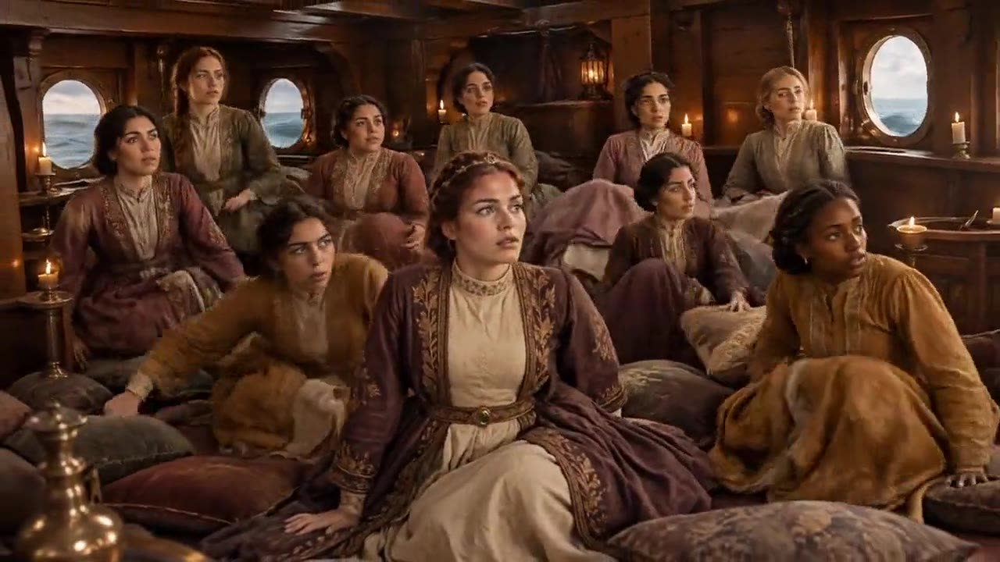
03-14 · 1:16 · השוט הקודםהבנות מתעוררות בתוך הספינה. הים נראה בחלונות העגולים. המיקום נכון.
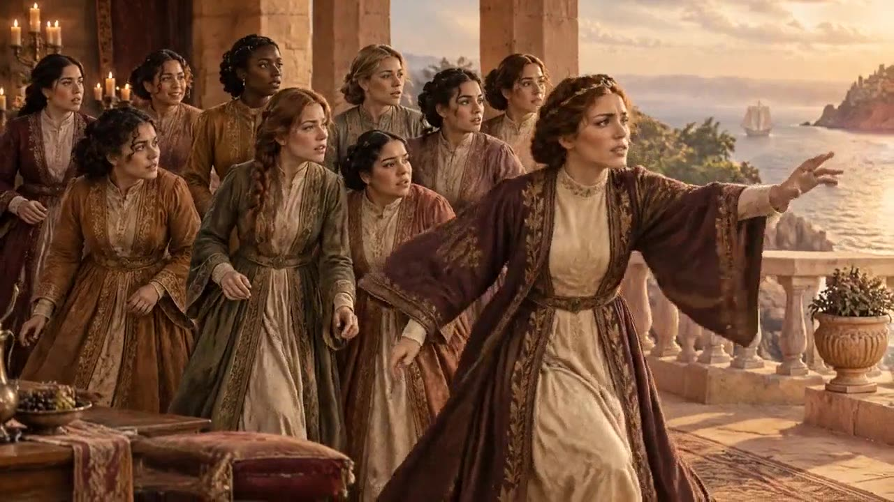
03-15 · 1:20 · נקודת ההערהקפיצה למרפסת אבן בארמון שעל החוף. הספינה נראית מרחוק בים, ובת הקיסר מצביעה אליה כאילו הן ביבשה.
הבעיה
הקריינות והשוטים שלפני ואחרי ברורים: הן כבר הפליגו. ב־03-13 בת הקיסר ליד ההגה והבנות ישנות על הסיפון; ב־03-14 הן מתעוררות בתוך הספינה. ב־03-16 הן שוב על הסיפון ברוח סערה. באמצע, ב־03-15, כשהבנות מבקשות לחזור והיא עונה «נשהה עוד כאן קצת», התמונה קופצת לארמון ביבשה. זה סותר את הסיפור.
הפתרון המוצע
לייצר מחדש רק את 03-15, על סיפון הספינה (כמו 03-14 ו־03-16): בת שר מבקשת לחזור, ובת הקיסר משיבה ביד מרגיעה. בלי יבשה ובלי ארמון.
שיטה: תמונת פתיחה ב־GenerateImage (חינם) מרפרנס 03-14/03-16, ואז fal flux-3-max image-to-video, 720p, בלי שמע — כמו v1.
שוטים: 03-15 בלבד · 2×5 שניות = 10 שניות.
עלות: 0.43$ לפי המחיר החי 0.0425$/שנייה · 1.70$ לפי מחירון 0.17$.
הערה מאוחדת: קולית, קטע 1 (המשך) 0:35 — «התמונה הזאת אמורה להיות בתוך הספינה, לא ביבשה כבר.»
2. דיליי: שומעים על המפרשים ואז רואים הפקה מחדש
קטע 1 (המשך) · 0:55 · בקטע המקורי 1:40 · בסרט המלא 1:40 · שוטים 03-17 «על מה עשתה כן» ו־03-18 «המפרשים נפתחים» · ספינה
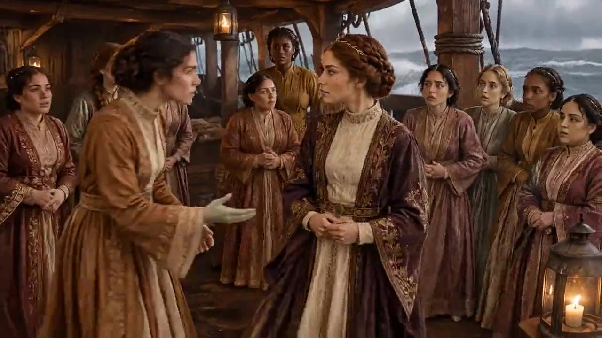
03-17 · 1:37 · שיחההקריינות עדיין «ושאלו אותה על מה עשתה כן».
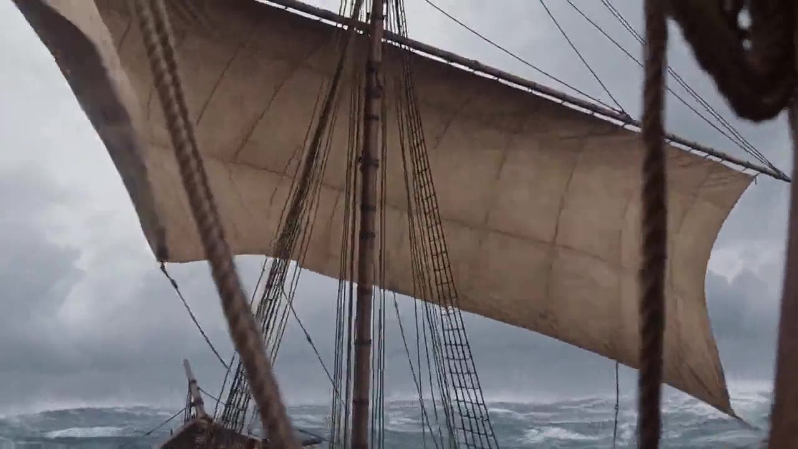
03-17 · 1:36 · מוקדם מדיעוד לפני שורת המפרשים, כבר נראה מפרש גדול פתוח.
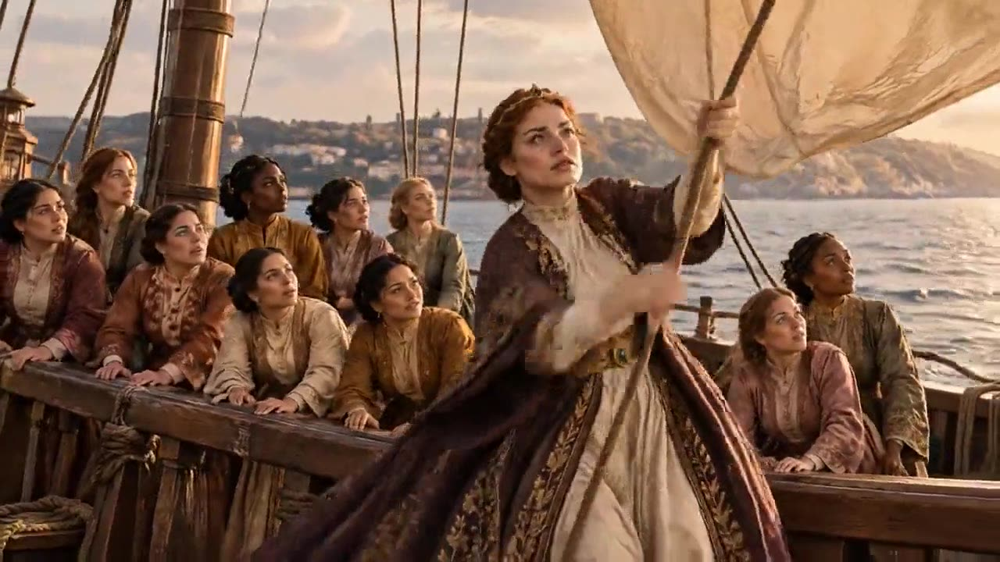
03-18 · 1:40 · נקודת ההערההקריינות: «לפרוש הווילונות, היינו המפרשים». בתמונה היא אוחזת במטלית קטנה, לא פורשת את המפרש הראשי.
הבעיה
שומעים את הקריינות על פרישת המפרשים (מתחילה ב־1:39, שוט 03-18) ואחר כך לא רואים את הפעולה עצמה: ב־03-18 היא מניפה בד קטן. את המפרש הגדול רואים כבר בתוך 03-17, כשהקריינות עדיין «על מה עשתה כן». הפעולה והקריינות לא יושבות זו על זו.
הפתרון המוצע
לייצר מחדש את 03-18 כך שבת הקיסר מושכת בחבל ופורשת את המפרש הראשי ממש על שורת «לפרוש הווילונות». אם אפשר, גם לכוון קלות את חיתוך 03-17 (רק האצה/האטה בין 0.85–1.15, בלי הקפאה) כדי שהמפרש הגדול לא יופיע מוקדם מדי. בלי אפקטים ובלי דיזולב.
שיטה: GenerateImage חינם + fal i2v 720p כמו v1. עריכת קצב רק אם צריך, בלי הקפאת פריים.
שוטים: 03-18 · 1×5 שניות. 03-17 נשאר, עם כיוון חיתוך במידת הצורך.
עלות: 0.21$ לפי 0.0425$ · 0.85$ לפי 0.17$. עריכה בלבד הייתה בחינם, אבל התמונה ב־03-18 לא מראה את הפעולה לכן מומלץ להפיק מחדש.
הערה מאוחדת: קולית, קטע 1 (המשך) 0:55 — «יש פה בעיה עם ה... יש פה איזה דיליי קצת. קודם שומעים את הקריינות ואז רואים את הסיפור.»
3. לא ברור מה המסר בשוט הדוקטור והמלכה הפקה מחדש
קטע 3 (המשך) · 0:35 · בקטע המקורי 1:16 · בסרט המלא 7:39 · שוט 04-27 «הדוקטור והמלכה» · תא בספינה
04-27 · 1:16 · נקודת ההערההדוקטור והמלכה ליד כיסא. לא רואים את רצון השרים שהמלכה תישא את הדוקטור.
הבעיה
הקריינות אומרת שרצו שהמלכה, אשת בן המלך שמת, תישא את הדאקטער. בתמונה שתי הדמויות עומדות ליד כיסא בתא, בלי השרים ובלי פעולה שמספרת את ההצעה. המסר שנשמע בקריינות לא נראה בשוט.
הפתרון המוצע
לייצר מחדש את 04-27 כך שהשרים נראים מדברים על ההצעה, או מציגים את הדוקטור לפני המלכה — פעולה שמתארת את מה שנשמע. הדוקטור נשארת בתחפושת הבנים. בלי שני גברים מוכתרים באותו שוט.
שיטה: GenerateImage חינם + fal i2v 720p כמו v1.
שוטים: 04-27 · 2×5 שניות = 10 שניות.
עלות: 0.43$ לפי 0.0425$ · 1.70$ לפי 0.17$.
הערה מאוחדת: קולית, קטע 3 (המשך) 0:35 — «לא ברור מה המסר בסרטון הזה, תיצור מחדש משהו שמדבר על המסר ששומעים בקטע.» (אי־ודאות קלה בסיום המשפט: «בקטע».)
4. במקום כרית — כתר שרוצים להלביש לה הפקה מחדש
קטע 3 (המשך) · 0:44 · בקטע המקורי 1:25 · בסרט המלא 7:48 · שוט 04-28 «מלך חדש בדמיונם» · תא בספינה
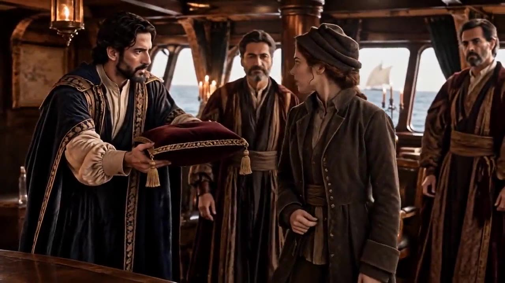
04-28 · 1:25 · נקודת ההערההשר מושיט כרית קטיפה אדומה. אין כתר שהוא רוצה להלביש לה.
הבעיה
הקריינות: בחכמתה ידעה שנשרף המוח, «ושיהיה הוא מלך שלהם». בתמונה שר מושיט כרית, לא כתר שמתכוונים להלביש לדוקטור. הפעולה לא מספרת שיהיה מלך.
הפתרון המוצע
לייצר מחדש את 04-28: אותו תא ואותן דמויות, והשר אוחז כתר (או כתר על הכרית) ומושיט אותו אל הדוקטור, כמי שרוצה להלביש לה. הדוקטור עדיין בתחפושת, בלי כתר לראשה בשוט הזה (זה לפני החתונה). רק כתר אחד בידי השר, בלי שני מוכתרים.
שיטה: GenerateImage חינם + fal i2v 720p כמו v1.
שוטים: 04-28 · 2×5 שניות = 10 שניות.
עלות: 0.43$ לפי 0.0425$ · 1.70$ לפי 0.17$.
הערה מאוחדת: קולית, קטע 3 (המשך) 0:44 — «במקום שיחזיק כרית, שיחזיק ליד כתר שרוצה להלביש לה.»
5. הקטע לא ברור, בלי הקשר הפקה מחדש
קטע 3 (המשך) · 1:44 · בקטע המקורי 2:25 · בסרט המלא 8:48 · שוט 04-37 «המלכה מסכימה בתנאי» · סיפון / צריך הקשר המשתה
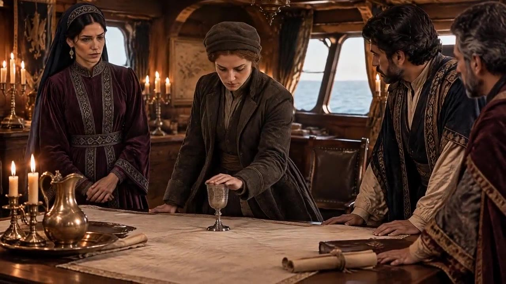
04-36 · 2:15 · השוט הקודםהמשתה: «רק אם היו מדברים זאת בלתי פה שתוי». יש הקשר.
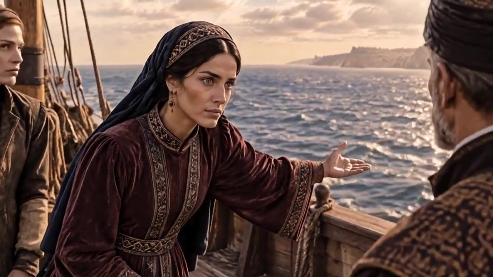
04-37 · 2:25 · נקודת ההערהקפיצה לסיפון הפתוח. המלכה מחווה אל הים. נעלם שולחן המשתה, וההסכמה בתנאי לא נקראת.
הבעיה
הקריינות: המלכה נענית ואומרת שמה יפה היה שתישא את הדאקטער, רק שהמדינה תסכים. השוט יוצא מהמשתה לסיפון פתוח, בלי השולחן ובלי פעולה של הסכמה. חסר הקשר, והקטע לא ברור.
הפתרון המוצע
לייצר מחדש את 04-37 באותו חדר משתאות של 04-36: המלכה נענית, ומציינת את התנאי שהמדינה תסכים. הדוקטור והשרים נשארים סביב השולחן.
שיטה: GenerateImage חינם, רפרנס 04-36, ואז fal i2v 720p כמו v1.
שוטים: 04-37 · 2×5 שניות = 10 שניות.
עלות: 0.43$ לפי 0.0425$ · 1.70$ לפי 0.17$.
הערה מאוחדת: קולית, קטע 3 (המשך) 1:44 — «תיצור מחדש את הקטע הזה, קטע לא ברור, בלי הקשר.» (אי־ודאות קלה בפתיחה: «תיצור מחדש» מול «צור מחדש».)
6. אחרי החתונה — כתר ובגדי מלך, כמו ב־04-48 הפקה מחדש
קטע 3 סוף + קטע 4 · שוטים 04-42, 04-43, 04-46 (וגם 04-44 ו־04-45 בכרטיס 7) · אחרי הנישואין
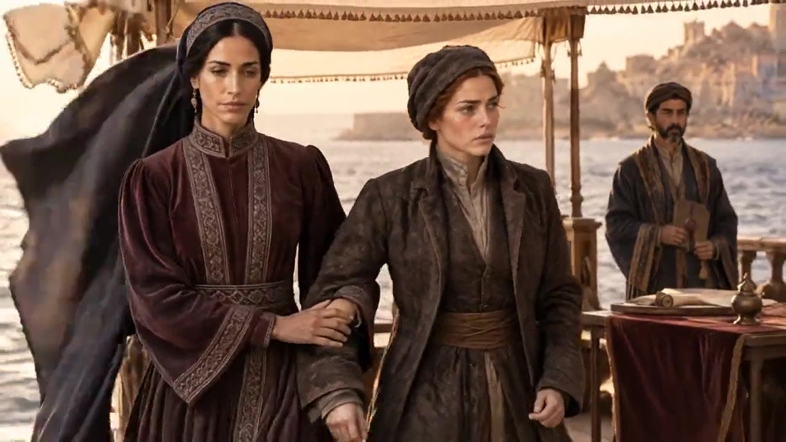
04-42 · נישואין · קטע 3 2:55 / מלא 9:17החתונה: הדוקטור עדיין במעיל החום, בלי כתר.
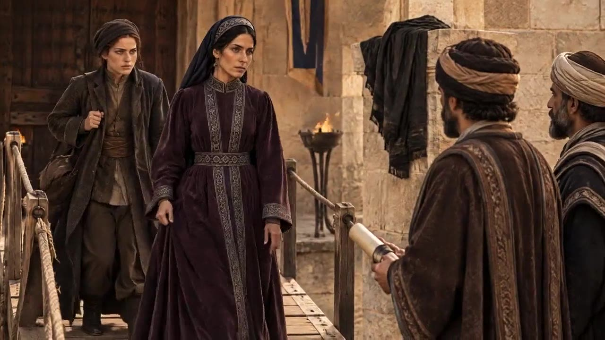
04-43 · 2:59 בקטע 3 / מלא 9:23יורדות אל החוף. הדוקטור במעיל הנוסעת, בלי כתר, מאחורי המלכה.
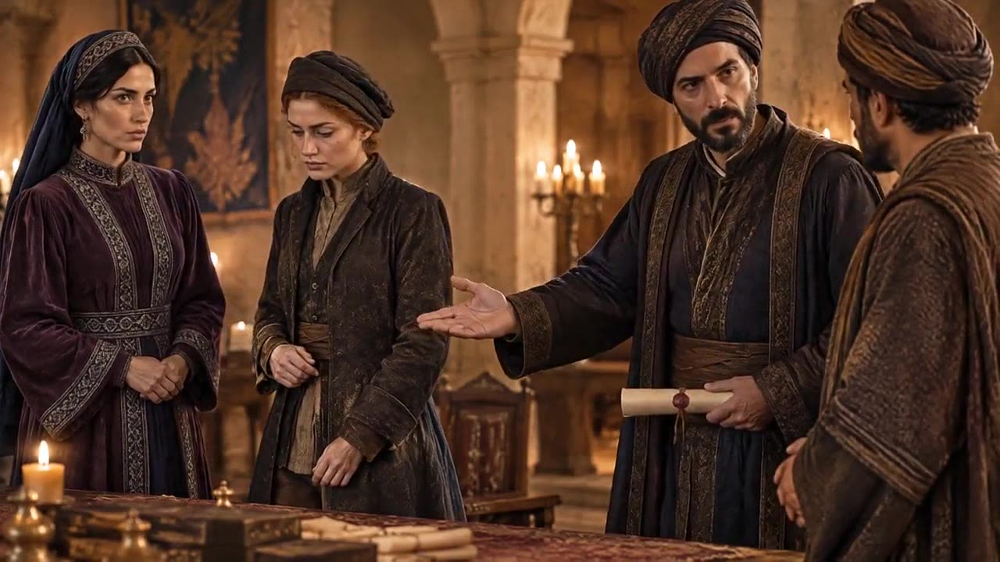
04-46 · קטע 4 0:22 / מלא 9:45«קיבלו להם מלך זה שבא עימם» — והיא עדיין במעיל חום, ראש מורכן, בלי כתר.
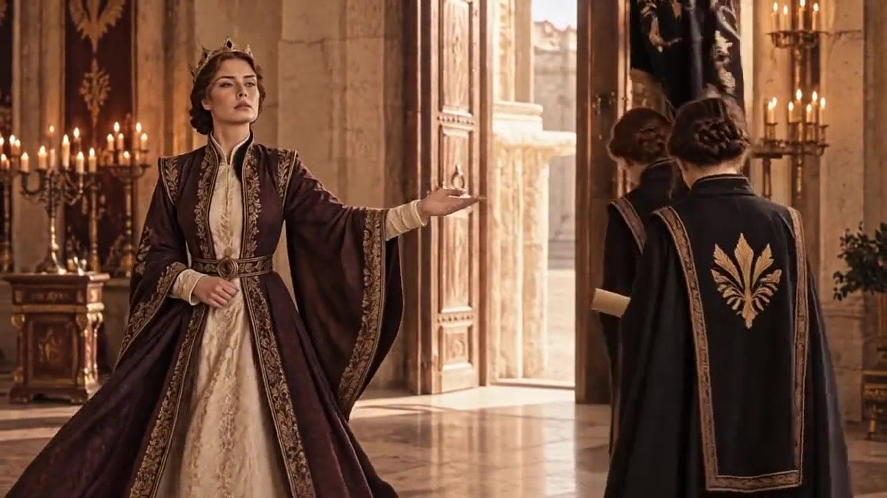
04-48 · קטע 4 0:34 / מלא 9:57 · המראה הנכון«פה הבגדים כמו שצריך.» כתר ובגדי מלכות. זה הרפרנס לשלבים שאחרי החתונה.
הבעיה
אחרי הנישואין הדוקטור צריכה כתר ובגדים חשובים יותר, בגדי מלך (בגדי בנים). ב־04-42, 04-43 ו־04-46 (וגם בתחילת 04-44/04-45) היא נשארת במעיל הנוסעת החום, בלי כתר. ב־04-47 ו־04-48 המראה כבר נכון — וזה מה ליישם גם בשלבים הקודמים, מהחתונה ואילך.
הפתרון המוצע
לנעול את 04-47/04-48 כרפרנס, ולייצר מחדש את 04-42, 04-43 ו־04-46 באותו כתר ובגדי מלך. את אותו מראה יש להחיל גם על 04-44 ו־04-45, שמיוצרים מחדש בכרטיס 7 (בלי לספור אותם פעמיים בעלות). בגדים צנועים ורוחבים; דמות אחת מוכתרת בשוט.
שיטה: GenerateImage חינם מ־04-48 + fal i2v 720p כמו v1.
הערות מאוחדות: (1) טקסט, קטע 3 (המשך) 2:19 / מלא 9:23 — «הדוקטור צריכה להיות עם כתר ועם בגדים יותר חשובים אבל בגדי בנים.» (2) טקסט, קטע 4 0:03, הוראה כללית / מלא 9:26 — «שיהיה לה לדוקטור אחרי החתונה כתר ובגדי מלך.» (3) טקסט, קטע 4 0:34 / מלא 9:57 — «פה הבגדים של הדוקטור כמו שצריך, תעשה ככה גם בשלבים הקודמים.»
7. חסרים בני המדינה שמחפשים את המלך הפקה מחדש
קטע 4 · 0:15 · בסרט המלא 9:38 · שוטים 04-44 «החזרה והחסר» ו־04-45 «היכן מלכנו» · הנמל
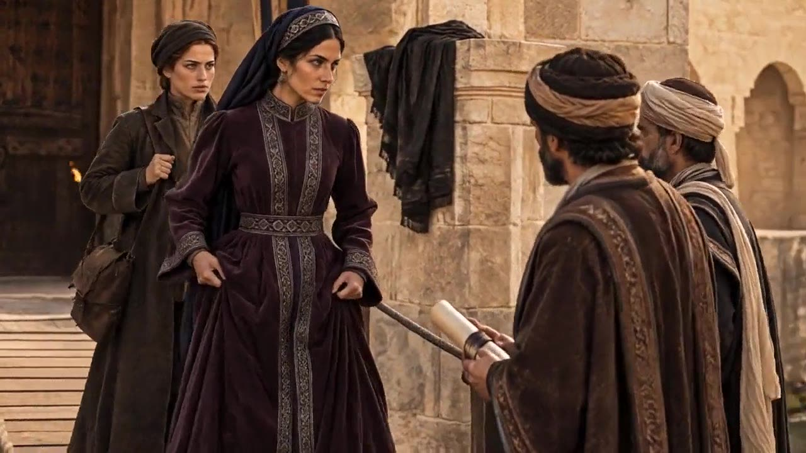
04-44 · 0:03 / מלא 9:26הקריינות: בני המדינה ראו שהם באים ושמחו. בתמונה שני פקידים בלבד על הגשר, בלי קהל.
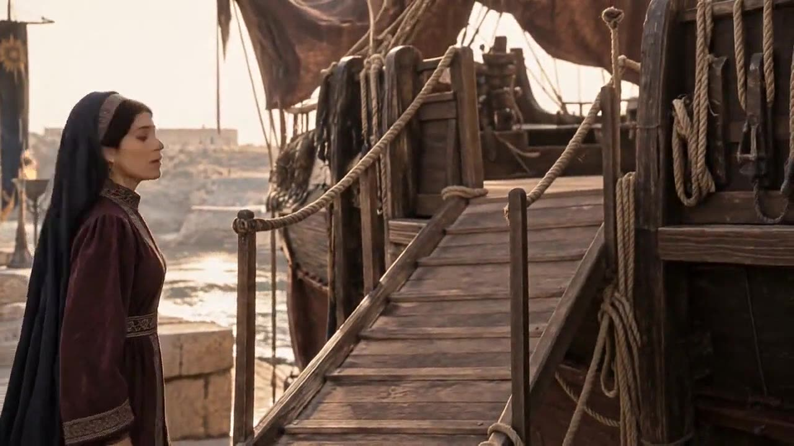
04-45 · 0:15 / מלא 9:38 · נקודת ההערה«היכן הוא מלכנו?» המלכה לבדה מול גשר ריק. אין בני מדינה שמסתכלים ומחפשים את המלך.
הבעיה
צריכים להיות הרבה בני מדינה מסביב, שמסתכלים לראות איפה המלך. ב־04-45 אין קהל כלל; ב־04-44, כשהקריינות אומרת שבני המדינה שמחו על שובם, נראים רק שני אנשים עם מגילה. חסר הקהל.
הפתרון המוצע
לייצר מחדש את 04-44 ו־04-45 עם קהל בני המדינה בנמל. ב־04-45 הקהל מחפש ומסתכל סביב: איפה המלך. באותם שוטים הדוקטור תופיע בכתר ובגדי המלך של 04-48 (כרטיס 6), כדי לא לייצר את השוטים פעמיים.
שיטה: GenerateImage חינם + fal i2v 720p כמו v1.
שוטים: 04-44 (2×6) + 04-45 (2×5) = 22 שניות.
עלות: 0.94$ לפי 0.0425$ · 3.74$ לפי 0.17$.
הערה מאוחדת: טקסט, קטע 4 0:15 — «שיהיו הרבה בני המדינה מסביב שמסתכלים לראות איפה המלך.» (קשור גם ל־04-44, שבו הקריינות מדברת על בני המדינה ושמחתם.)
8. היא לא אמורה להיות שם — רק הציור שלה הפקה מחדש
קטע 4 · 1:51 · בסרט המלא 11:14 · שוט 05-13 «המבט מסגיר» · מעיין / דיוקן
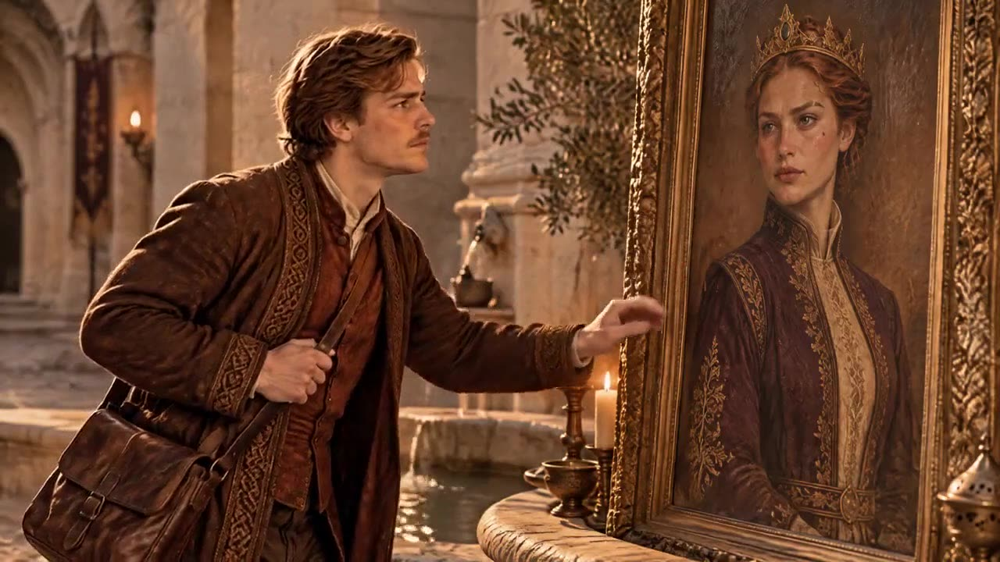
05-12 · 1:48 · השוט הקודם, נכוןבן הסוחר מול הדיוקן בלבד. היא לא עומדת שם בגוף.
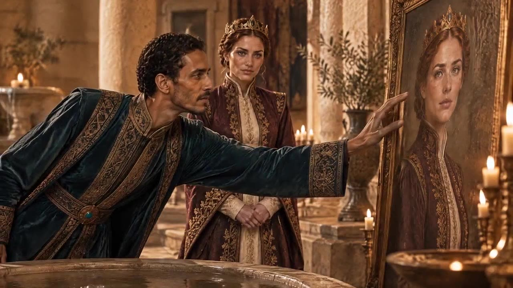
05-13 · 1:51 · נקודת ההערההמלך המגורש מביט בדיוקן, ובת הקיסר עצמה עומדת מאחוריו בכתר. מוזר שהיא שם — צריך להיות רק הציור.
הבעיה
במעיינות צריך להיות רק הדיוקן (ושומרים). כך זה ב־05-08, 05-11 ו־05-12: האיש מגיע, מביט בציור, נסער. ב־05-13 בת הקיסר עומדת בגוף ליד המלך המגורש מול דיוקנה. היא לא אמורה להיות שם, רק הציור שלה.
הפתרון המוצע
לייצר מחדש רק את 05-13, באותה קומפוזיציה של 05-12: המלך המגורש (C5, בלי כתר) מושיט יד אל הדיוקן, נסער. בלי בת הקיסר בגוף. הדיוקן נשאר כרפרנס מ־05-12.
שיטה: GenerateImage חינם מ־05-12/05-13 (בלי הדמות החיה) + fal i2v 720p כמו v1.
שוטים: 05-13 · 1×5 שניות = 5 שניות.
עלות: 0.21$ לפי 0.0425$ · 0.85$ לפי 0.17$.
הערה מאוחדת: קולית, קטע 4 1:51 — «היא לא אמורה להיות פה, רק הציור שלה, זה מוזר שהיא פה.»